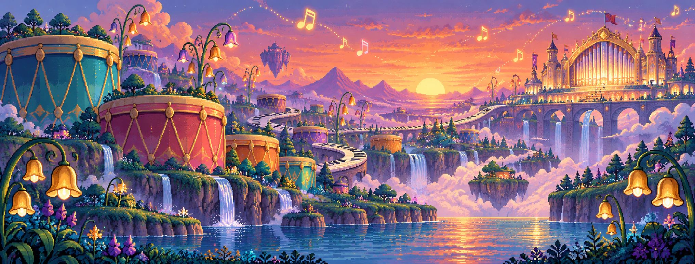
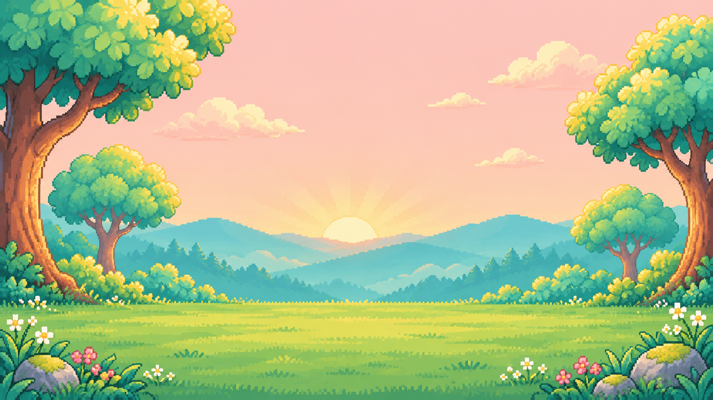

El tambor de Armonía · boceto de aspecto
Armonía toca un patrón (llamada) y Noa lo repite en el compás siguiente (respuesta). Cambia las opciones y pulsa «Tocar». En modo «Juego yo», golpea con Espacio o con el botón.
♪ ♫ ♪ ♫ ♪


¡Escucha!
¡Tu turno!
¡Bien!
Atril de Armonía
Pulsa «Tocar»
Disposición
Escenario
Ayuda
Turno
Quién toca
- Tempo de boceto: 100 pulsos por minuto, compás de 4, cuenta de 4. La canción, el tempo y los patrones definitivos se deciden en sus propios tickets.
- El tambor de Armonía suena grave y redondo (timbal) y el de Noa más seco y brillante (tom). Cada golpe de Noa toca además la siguiente nota de la melodía.
- Noa provisional: pose del duelo de piedra, papel o tijera, con gorro de banda y baqueta dibujados encima. Las poses del disfraz final se piden aparte.